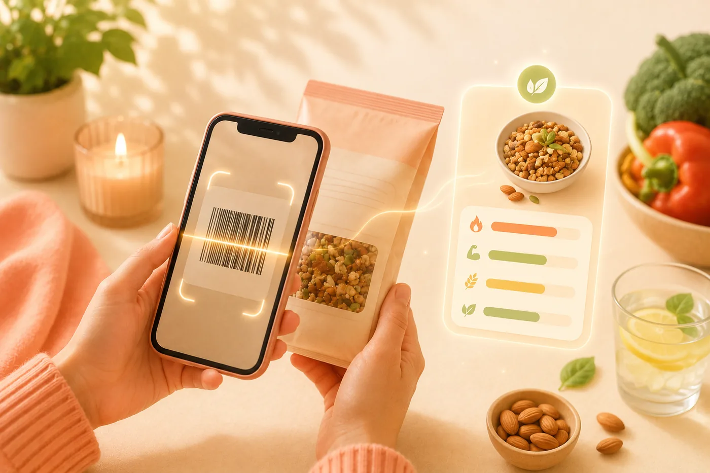

Packaged food, already solved.
Point the camera at the barcode on any packet and the nutrition comes straight back — calories, macros, the ingredient list and the allergens, read from a large product database rather than estimated. It is free, it is unlimited, and it never touches your AI scan allowance.

Four seconds, most of them holding the packet.
Anything with a barcode is the easy case. There is no estimating involved — the numbers come off the product record.
Point at the barcode
Anywhere on the pack, any angle you can hold it at. It reads as soon as the code is in frame.
The product comes back
Name, brand and the full nutrition record, pulled from the database rather than worked out from a photo.
Set the amount
Per 100 g, per the serving printed on the label, or the amount you are actually having. Half a packet is half a packet.
Log it to a meal
Straight into Breakfast, Lunch, Dinner or Snack, where it joins everything else in the day.
Label numbers, without reading the label.
Everything on the back of the pack, in a form you can actually compare and track.
Instant identification
The product recognised by its barcode, so there is no searching, no near-miss database entries and no picking between eight versions of the same yoghurt.
Calories
The headline number, for the amount you set rather than only per 100 g.
Full macro breakdown
Protein, carbs and fat, straight into the day's rings.
The ingredient list
What is actually in it, in the order it is in it — which is often more revealing than the calorie count.
Allergens
Called out from the product record, so you are not scanning small print in a supermarket aisle.
Free and unlimited
Barcode scanning is not metered and does not consume an AI scan. Scan a whole shopping basket if you want to — it costs nothing.
Two products, one decision, four seconds.
The real use for barcode scanning is not logging — it is deciding. Standing in an aisle with a packet in each hand is the moment a nutrition label is worth something, and it is also the moment nobody reads one.
- Scan both and compare the actual numbers instead of the marketing on the front of the pack.
- Because it is unlimited and free, there is no reason not to scan something you are only considering.
- Anything you do log feeds the same day totals, rings and Weekly Report as a photographed meal.
- Coach Kal can see your logged packaged foods, so “why is my sodium high this week?” has a real answer rather than a guess.
Questions about barcode scanning
Is barcode scanning included in the free plan?
Yes, and it is unlimited. It is not a trial feature, it is not capped per day, and it does not use up AI scans.
Does it use my AI scan quota?
No. Barcode lookups and AI photo scans are completely separate. Scanning a hundred barcodes leaves your AI scans untouched.
What if a product is not in the database?
It happens, particularly with small local brands. You can photograph the food instead, or add the item by hand from the label — either way you are not stuck.
Does it work outside my country?
The database is international and covers a very large range of packaged products, so most supermarket items scan wherever you are. Regional and own-brand products are the most likely gaps.
Keep reading
How to get more out of what is printed on the pack.
Scan the packet. Skip the small print.
Fotocal is free to start, with a 5-day free trial on the paid plans.
GET IT ONGoogle Play